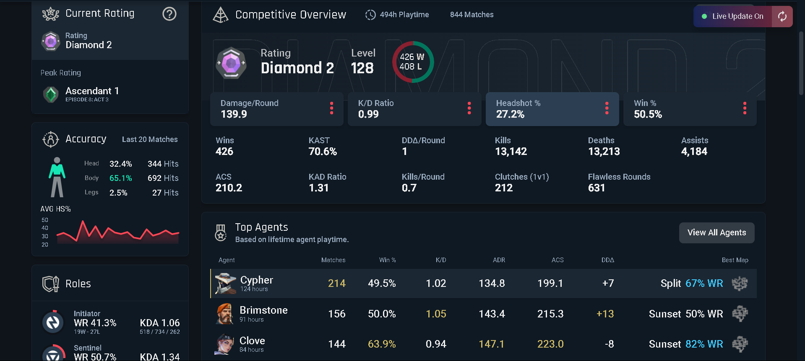
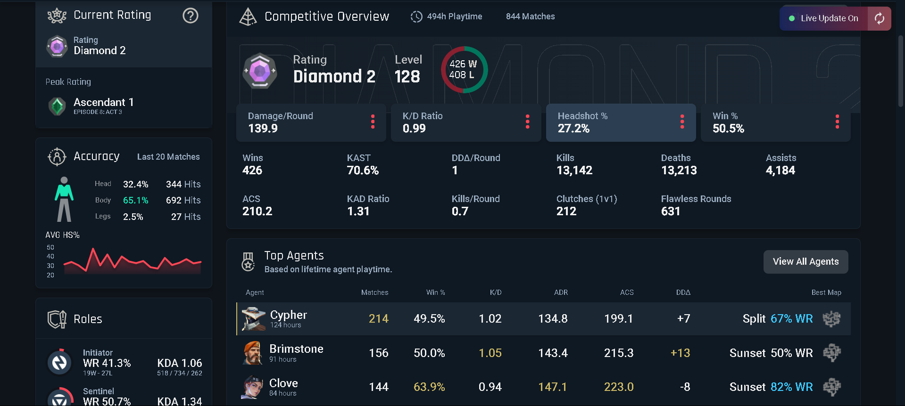

My Hobbies
| Sports | Martial Arts | Other Sports | Gaming | Anime |
- Sports
-
- Martial Arts
- Greco-Roman wrestling🤼: 2 year experience, no achievements (didn't participated in any competitions)
- Karate-do Kyokushin🥋: 4,5 year experinece, yellow belt, 1 gold medal 🏅
- Other Sports
- Football⚽: 2.5 year experience, no achievements (locals where too good)
- Tennis🎾: 3 year experience, no achievements (didn't participated in any competitions)
- Gaming🎮
- Valorant
 : tracker profile, 472 hours, Ascendant 1
: tracker profile, 472 hours, Ascendant 1 , peak rank

, peak rank
 - Counter Strike 2
 :
:  faceit profile,
faceit profile, steam profile, 1 630 hours, mg1 and faceit lvl 4 peak
steam profile, 1 630 hours, mg1 and faceit lvl 4 peak - Anime
-
Favorite ones:
Steins;Gate
Steins; Gate follows an eclectic group of individuals who have the ability to send text messages to the past. However throughout their experimentation process, an organization named SERN who has been doing their own research on time travel tracks them down. Now it’s a careful game of cat and mouse to not get caught and moreover, try to survive.
Mushoku Tensei
The life of an unemployed 34-year-old ataku comes to a standstill, and the man decides that it's time to start from scratch. But here's the bad luck — he gets hit by a truck, and he gets into a magical world! (again. nothing new. truck-san) The former otaku transforms into a baby named Rudeus Greyret, retaining all the memories from his previous life. Despite all the dangers and ...
Demon Slayer
The Taisho Era. Since ancient times, there have been rumors that demons live in the forest, which feed on people and seek out new victims at night. One day, Tanjiro Kamado goes to a nearby town to sell charcoal. Returning in the morning, the guy discovers a terrible picture in front of him: all his relatives were brutally murdered, and the only survivor is Nezuko's younger ...
Solo leveling
10 years ago, the gates to another world opened, where people are allowed to kill monsters. That's how hunters appeared, chasing and destroying creatures. But not every one of them is destined to raise their level and become stronger. Song Jin-woo was a low-level E-rank hunter who didn't have a single chance to advance up the rank ladder until one day he accidentally found himself in a D-rank dungeon. Almost dying at the hands of the strongest monsters, Jin Wu discovers the secret of leveling up, known only to him. Now even the weakest can become the strongest.
Re:Zero
On the way back from the store, Subaru Natsuki is unexpectedly summoned to another world. It stands the devil knows where, there is no trace of the summoner himself, and he is also being attacked! It would be completely rubbish if it weren't for a beautiful silver-haired maiden with a fluffy cat at the ready, who saves Subaru, after which he joins her in gratitude to search for the stolen valuables. But as soon as they find a clue, both are immediately killed. Subaru wakes up in the same place as the first time, and discovers that he has a good ability to return to the past after death.
SAO
Experienced gamer Kirito was lucky to participate in the beta testing of the most anticipated computer game of the new generation - Sword Art Online. When the discs with the final version finally appeared on the shelves, thousands of gamers rushed into the perfect virtual world of MMORPG. An unpleasant surprise awaited them there - the game master announced that it was impossible to quit the game of their own free will. The only chance to do this is to complete all one hundred levels to the end. And death in the game means death in real life.
Bunny Girl Senpai
Puberty syndrome – Abnormal experiences rumored on the internet to be caused by sensitivity and instability during adolescence. This year, Sakuta Azusagawa, a second-year student at a high school near Enoshima, meets several girls that are experiencing this “puberty syndrome.” For instance, he meets a wild bunny girl in the library. She turns out to be an actress on hiatus, Mai Sakurajima, who is also his senior at the school. For some reason, no one else can see this enchanting girl. How did she become invisible…?
The Tower of God
The Tower of God is a place where dreams come true and hearts are broken, only a strong spirit can get to the very top. This is exactly what Rachel had wanted all her life, and the Twenty-fifth Baam went after her, because this girl was for him the only ray of light in this gloomy and unfriendly world. At the entrance to the tower, there will be no way back — only up to new challenges. Much awaits the main characters here: joy and excitement, victories and defeats, pain and loss. Will they be able to reach the top?
Eminence in shadow
As many idolize their heroes in childhood, one young man worshipped the forces operating in the shadows. Keeping his power a secret, he led a mediocre life and played the role of an ordinary character, but at the same time indulged in insane night training. In the end, his destiny is reborn in another world, granting him absolute power. The story is about a young man who worshipped forces hidden in darkness, his subordinates underestimating the depth of his power, and a shadowy organization forgotten in the dust...
- Also I have acoustic guitar(Yamaha F310)